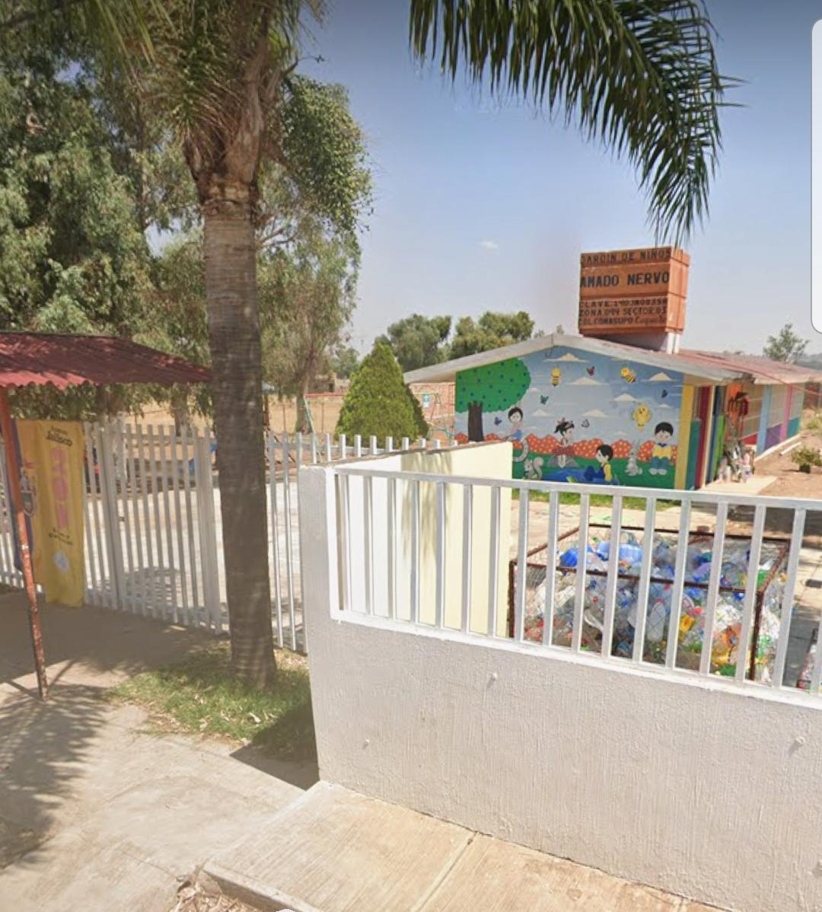
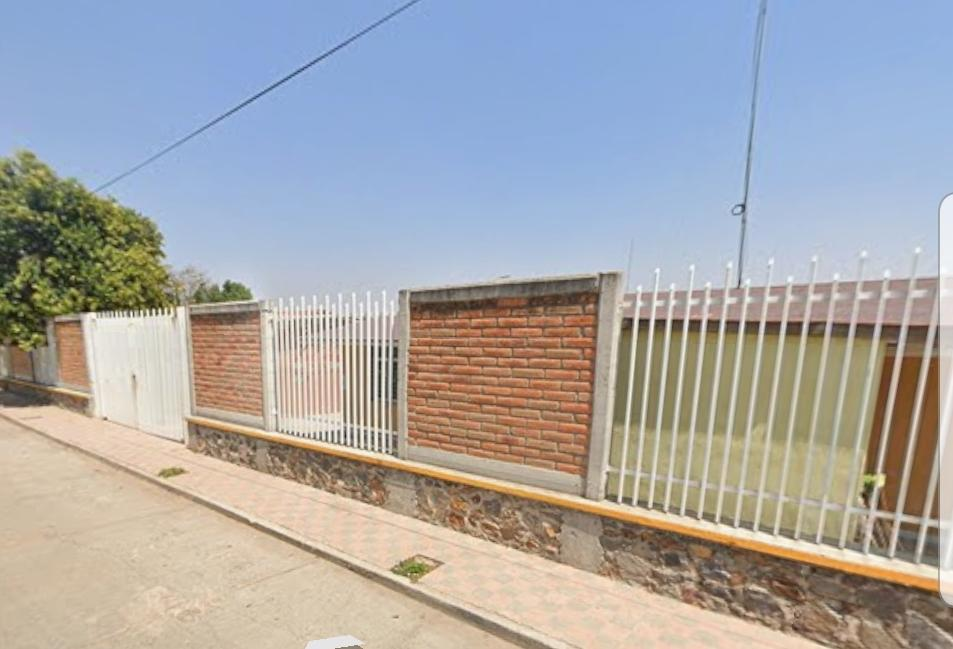
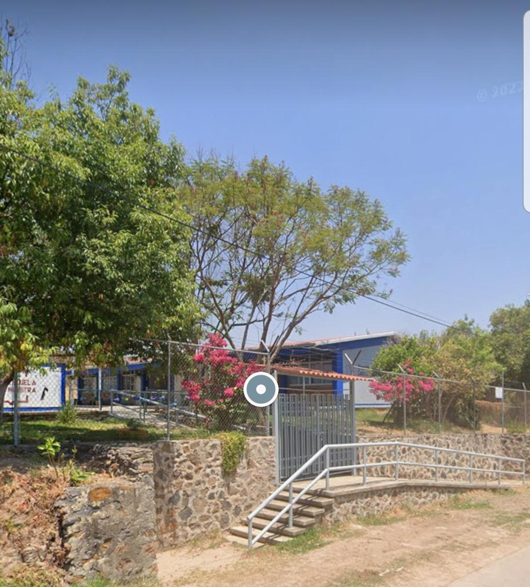
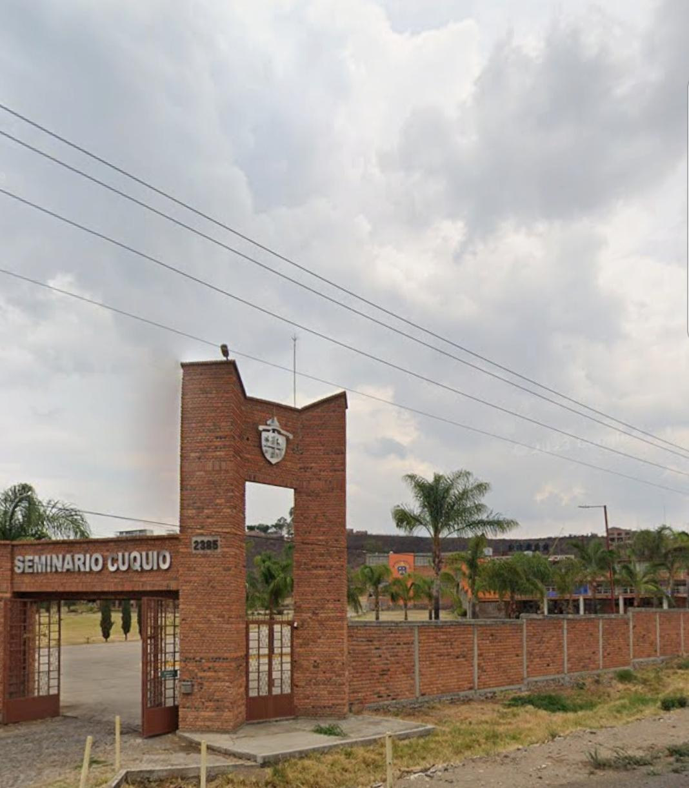
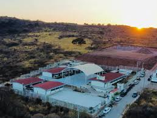
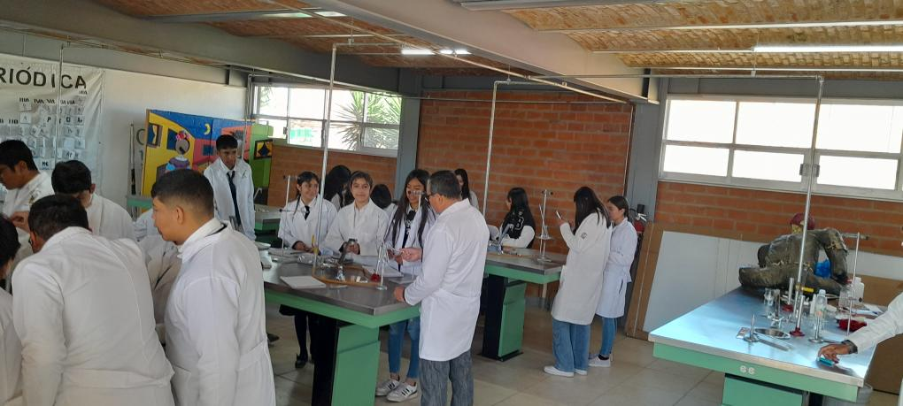
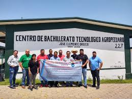

Amado Nervo

Una opción educativa para los más pequeños, ubicada en la colonia CONASUPO.
Alvaro Obregon

Una opción educativa para los más pequeños, ubicada en el corazón del municipio.
CAM

un CAM (Centro de Atención Múltiple) es un servicio escolarizado que brinda atención integral a niños, niñas y jóvenes con discapacidad, discapacidad múltiple o trastornos graves del desarrollo, desde los 43 días de nacidos hasta los 18 años.
Seminario

Un seminario educativo es una reunión académica para estudiar en profundidad un tema específico. Se trata de una forma de organizar el aprendizaje que promueve la participación de los estudiantes.
secundaria tecnica 64
Las secundarias técnicas son escuelas secundarias que se enfocan en la educación tecnológica. Complementan la educación general con contenidos tecnológicos, y preparan a los estudiantes para el nivel medio superior y para el mercado laboral.
CECyTEJ aula externa Cuquio

es un plantel del Colegio de Estudios Científicos y Tecnológicos del Estado de Jalisco (CECyTE Jalisco). Ofrece la modalidad de bachillerato tecnológico y la carrera de Técnico en Programación.
Prepa 8 modulo Cuquio

Parte del sistema de la Universidad de Guadalajara, esta preparatoria ofrece bachillerato general y orientación vocacional.
CBTA No. 227 José Clemente Orozco

El CBTA es un Centro de Bachillerato Tecnológico Agropecuario (CBTA). Los CBTAs son escuelas preparatorias que ofrecen programas para actualizar el título regular a un nivel técnico-profesional.
COBAEJ
El Colegio de Bachilleres del Estado de Jalisco (COBAEJ) es una institución educativa que ofrece educación media superior. El COBAEJ ofrece modalidades escolarizada, no escolarizada y mixta esta ubicada en las cruces .